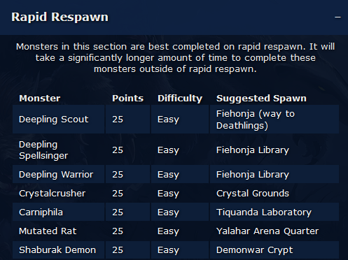
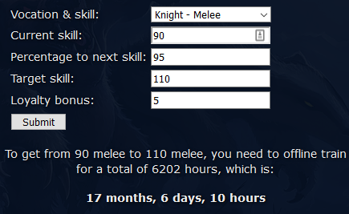
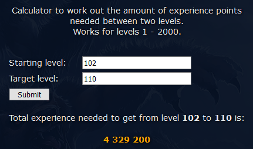

Hello everyone,
Today at TibiaPal.com we are publishing a new feature - 'Videos & Guides'!
We will be uploading video guides about hunting spots, quests, updates and more! Make sure to
subscribe to the Youtube
channel to be notified about all new videos!
Hope you enjoy the guides. If you have any suggestions or requests just let me know!
~Kusnier
02 June 2021 'Videos & Guides'
now available!
25 May 2021 TibiaPal is now an
official Tibia fansite! Plus some other changes...
Hello everyone,
Last week TibiaPal.com became an official Tibia fansite, endorsed by
CipSoft! Thank you all for using the site and coming back everyday, I couldn't be more happy!
In a few months we will have a contest for a fansite item so stay tuned! :)
In addition, I made some navigational changes to the site.
- In order to clean-up the navigation bar, some of the less used tools have been moved into 'Other Tools' section, you can still use them of course under this link Other Tools.
- I combined the 'organisational' sorts of pages into one. Previously we had separate pages for About/Contact/Privacy Policy/Archive. They are now all under the about subsite, which can be found here About & Contact.
I hope the changes will make it easier to browse the site! And thanks again everyone for your support, we made it as a fansite!!!!
~Kusnier
4 May 2021 'Exercise Weapons
Calculator' available - just in time for double XP/skill!
Hello everyone,
Today I added an 'Exercise Weapons Calculator' to TibiaPal!
You can find
it in the side bar or by going to https://tibiapal.com/exercise
You can use it to find out how much you need to spend/how many exercise weapons you need to get from
skill X to skill Y.
I really tried to get it published before the upcoming double XP/skill event, so I hope you make the
most of it! :)
~Kusnier
27 Apr 2021 Join TibiaPal.com
community discord!
Hello everyone,
Today I created a discord channel for the TibiaPal.com community! In the
channel you can discuss TibiaPal.com features and request new features that you'd like to
see.
I will always be active on the discord so this is also the easiest way to contact me. Hope to see
you there!
https://discord.gg/pJEFWr6Fjw
~Kusnier
31 Mar 2021 Changes to
TibiaLootSplit! History and more.
Hello everyone,
Today I added the much requested 'History' feature to
TibiaLootSplit!
From now on your latest 15 results will be saved for future reference. They can be accessed by
clicking the 'History' button in the TibiaLootSplit screen :)
Of course this will only work on new results you enter from today on, unfortunately not any of your
older results.
Also you may have noticed that a few days ago I re-factored the way to access 'Extra Expenses' and
'Remove Players' screens of TibiaLootSplit. Now they can be pre-selected after copying over the log
for a much friendlier User Experience!
If you experience any issues with the new features please let me know.
I hope you find the new improvements useful!
~Kusnier
17 Mar 2021 'Bestiary
Reference' now available.
Hello everyone,
Today I added a new feature called 'Bestiary Reference'.
This 'reference' includes the suggested approach to completing the majority of bestiaries in the
game (i.e. type of event and location).
The results are sorted based on difficulty and amount of points - I am hoping that this will make it
easier and more efficient for players to complete their first few charms.
If you're interested in using this reference, please make sure to read through the 'Background
information' first.
Example below:

I hope you find it useful!
~Kusnier
27 Feb 2021 Inviting you to
come chat with me on my Twitch channel!
Hi everyone,
Today I added my Twitch stream to the sidebar for you to be able to come and
chat with me :)
You can ask me whatever you like about Tibia or TibiaPal. New feature ideas are always welcome!
Please bear with me as I get used to streaming, tweaking the audio and stream features as so far I
am a total newbie with regards to Twitch. Btw, I plan to stream in English/Polish.
Hope to chat to you on stream!
~Kusnier
30 Jan 2021 Introducing
'Hunting Places'!
Hi everyone,
Today a new feature has been added to the website - 'Hunting Places'!
You can
now get ideas for where to hunt at all levels for solo hunts as well as Duos/Full TH.
If you have any suggestions for the places please feel free to email me at tibiapalcontact@gmail.com.
Hope you find it useful!
~Kusnier
06 Jan 2021 'Boss Timers' now
available
Hi all,
Today a new feature has been added to the website - 'Boss Timers'!
You can
now track your boss kill timers using a simple click.
Many thanks to Jeferson Assis who contribued most of
the code.
Enjoy!
~Kusnier
31 Dec 2020 Changes to imbue
calculator
As of today, the imbue calculator form with item values and imbue type will no longer disappear, and
will instead be re-usable.
You will no longer need to fully refresh the page to calculate multiple imbuements.
Enjoy!
~Kusnier
30 Dec 2020 Introducing
'Offline Training' calculator!
Have you ever wondered how long it takes to reach a certain skill while offline training?
Or maybe you want to find out how long it will take you to reach your target skill while offline
training?
Wonder no more - you can now find out by using the 'Offline Calculator' - available here
now, or by using the navigation bar on the left!
Example below:

Enjoy!
~Kusnier
30 Dec 2020 Rashid tracker now
available
Hi all,
As of today a Rashid tracker has been added to the sidebar.

Hope you find it useful.
~Kusnier
26 Dec 2020 Exp calculator now
available
Hi all,
A new feature, 'Exp calculator' is available from today.
You can use it by navigating to 'Exp Calculator' on the left.
You can use it to quickly find out the amount of experience required between two given levels,
e.g.:

~Kusnier
20 Dec 2020 Improvements to
Imbue Calculator
Hi all,
Today I made some changes to the way Imbue Calculator results are displayed.
The results are now in a table format which should make them easier to read and digest.
~Kusnier
16 Dec 2020 Leech Calculator
now available!
Hi all,
A new feature, 'Leech Calculator' is available from today.
Check it out by using the navigation bar on the left!
Hope you like it!
~Kusnier
11 Dec 2020 TibiaLootSplit -
remove players added
Hi all,
A new feature for 'TibiaLootSplit' is available from today.
Many of you asked for an option to 'Remove Players' from the loot split.
For example, when doing a boss rotation with friends and one random person, you don't want to split loot with the random person.
Or perhaps someone annoyed you during your hunt and you want to exclude them ;)
In any case, you now have the option to automatically remove players from the log. Simply head on
over to 'TibiaLootSplit' and you should see a new feature available at the bottom.
Once you paste your log, you will be presented with a list of players in the log, simply uncheck the
players you do not want to share loot with and click 'Calculate!'.
Enjoy!
~Kusnier
9 Dec 2020 New Calculators and
updates
Hi all,
A number of new features available today!
- 'Exp Share Calculator' to find out the level share range for your character
- 'Stamina Calculator' to work out the time to fully regenerate your stamina
- 'Imbue Calculator' enhancement to display the total cost and cost/hour of every imbue
~Kusnier
7 Dec 2020 'Imbue
Calculator' now available!
The 'Imbue calculator' feature is now available! Check it out by clicking on 'Imbue Calculator' in the sidebar!
Hope you like it!
~Kusnier
17 Nov 2020 Welcome to
TibiaPal.com!
Hello and welcome to TibiaPal.com! You are most likely coming here from tibialootsplit.com, in which case please continue using 'TibiaLootSplit' by using the navigation bar on the left.
I decided to re-brand TibiaLootSplit as 'TibiaPal' because I have plenty of exciting ideas for content and tools that I would like to create on top of 'TibiaLootSplit'. The name 'TibiaPal' conveys a lot better what I intend to do with the site :)
I am planning to update some of the already existing tools on other Tibia fansites, such as the imbue calculator. For now I created an active house auctions tool, which you can find by clicking 'House Auctions' on the left - this is more useful for worlds with fewer houses, such as Secura or Antica where using the built-in game house search takes a lot of time.
Anyway, I have plenty more ideas so stay tuned!
~Kusnier